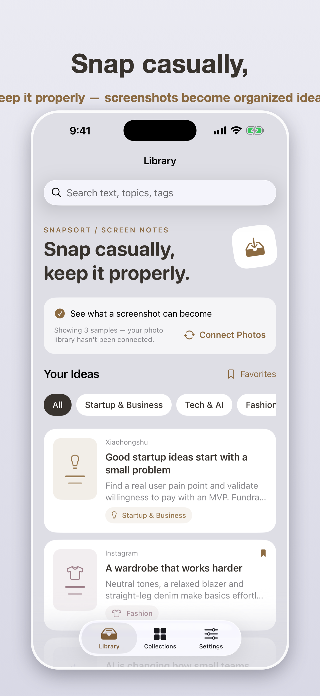
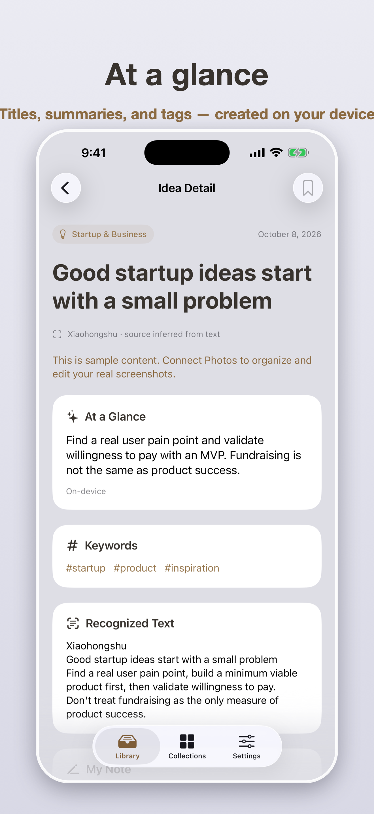
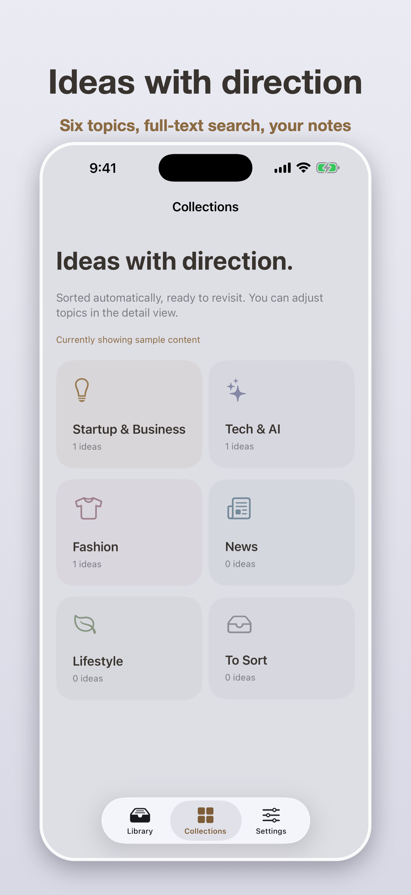

Make screenshots your second memory. SnapSort reads the screenshots you save, writes titles, summaries, and tags, and files them into collections you can actually find again.



OCR reads every screenshot; AI writes the title, summary, topic, and tags. Consecutive screenshots of one article merge into a single readable note.
Apple Vision OCR and on-device models do the daily work — nothing leaves your phone unless you turn cloud analysis on.
Keyword and semantic search across titles, tags, notes, and full text — in English and Chinese.
Export any note to Notion, an Obsidian vault, or Google Docs. Markdown everywhere, no lock-in.